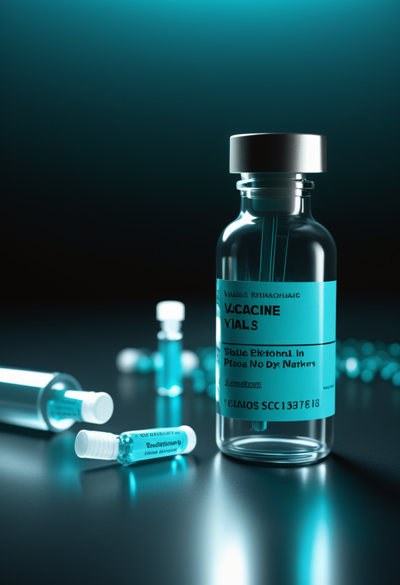
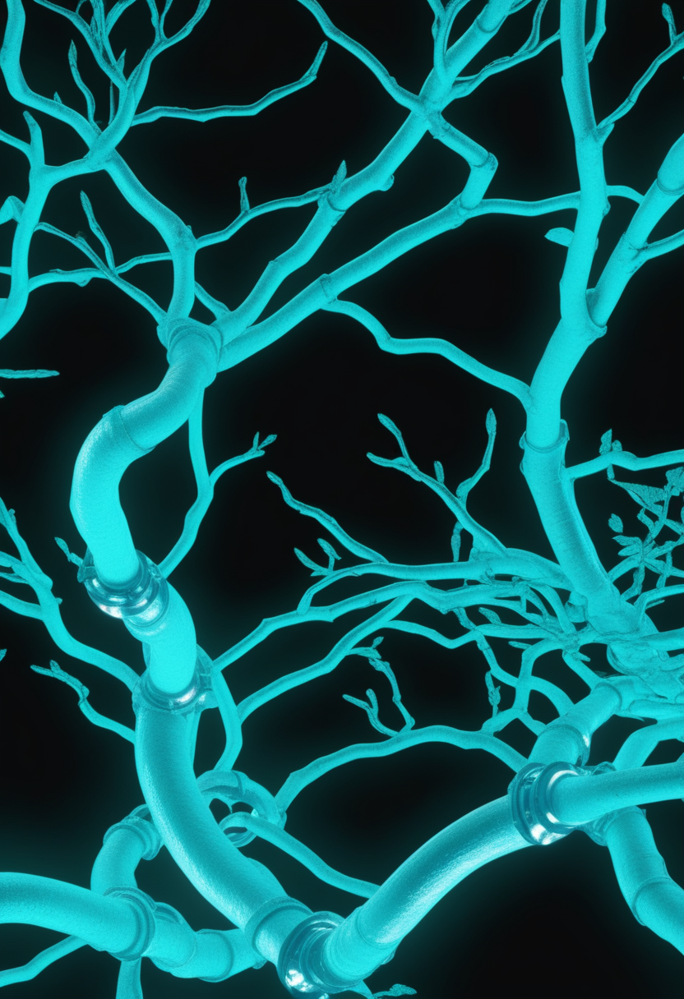
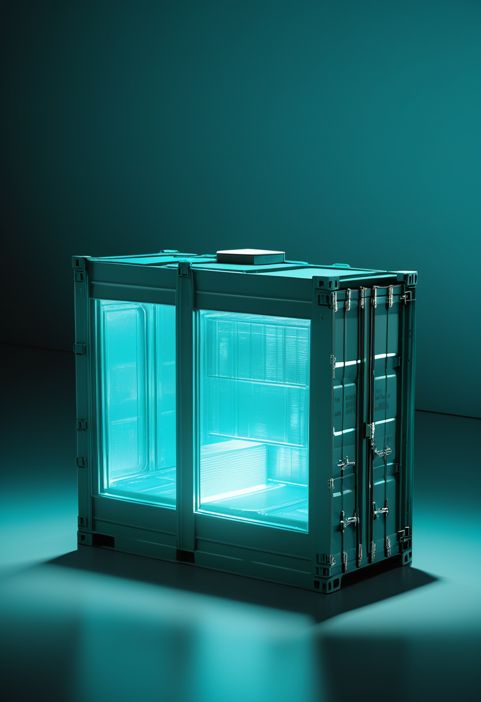

止まっていたのは流行ではなく、報告だった ― エボラ、3日分の空白に見えた本当の増勢
DRCのブンディブギョ型エボラは、9月6日の報告(9月5日までのデータ)で確定6,604例・死亡3,175人となった。本紙が3号にわたって据え置いてきた9月2日データ(6,342例・3,072人)と比べると、3日分で+262例・+103人である。前日報告比では+82例・+41人で、新規82例の内訳はイトゥリ州49、北キブ州31、オー・ウエレ州2。致死率は全体で約48.1%、北キブ州は約65.9%と突出する。隔離入院は851人、回復は1,548人。数字が3日間動かなかったのは、流行が鎮静したからではなかった。報告系が追いつかなかっただけであり、空白が埋まった瞬間に、その間の増勢がそのまま姿を現した。統計の沈黙を安心材料として読んではならない。

アピテグロマブ、FDA判断まで残り22日
Scholar Rockの筋標的薬アピテグロマブは、FDAのアクション日(PDUFA)である2026年9月30日まで、本日で残り22日となった。米国側の構図は前号から変わっていない。2025年9月の完全回答書(CRL)は、充填・仕上げ工程を担うCatalent Indianaの査察で観察された所見に起因するもので、有効性・安全性への懸念ではない。同社は当該施設を申請から外し、第2の充填・仕上げ施設のみで審査を進めている。代替施設からの市販用バイアルの供給体制は整っており、承認が9月30日までのどの時点で下りても、直ちに米国で発売できるとしている。
焦点は米国の外へ ― 欧州は取り下げて再申請、日本は年内申請へ
8月21日付のScholar Rock発表によれば、Catalent Indianaが受けた査察分類(OAI)を踏まえ、欧州では販売承認申請(MAA)をいったん取り下げ、代替の充填・仕上げ施設を用いて改めて提出する方針である。承認の遅れは避けられないが、審査の論点を製造所の問題に限定して切り離す判断と読める。日本については前進が明確である。医薬品医療機器総合機構(PMDA)は、アピテグロマブの規制申請にあたって追加の臨床試験は不要であると合意した。これを受けて同社は、2026年内に日本での製造販売承認申請(JNDA)を提出する見通しを示している。SMAの薬剤開発は長く『米国で承認され、数年遅れて日本へ届く』という順序をたどってきた。追加試験を求めない合意は、その時差を縮める方向に働く。
【記述の更新】日本の新生児スクリーニングは『任意事業』ではなく、国の実証事業として動いている
前号まで本紙は、日本のSMA新生児スクリーニング(SMA-NBS)について『公費マススクリーニング約20疾患にSMAは未収載で、実施は任意事業の枠内にとどまる』と記してきた。前半は正しいが、後半は現状を正確に伝えていない。訂正する。こども家庭庁は、従来の約20疾患のマススクリーニングとは別枠で、重症複合免疫不全症(SCID)とSMAの2疾患を対象とする公費の実証事業を、都道府県・指定都市単位で進めている。神奈川県・横浜市・川崎市・相模原市は2024年10月1日から本事業を開始し、新潟県・新潟市は2025年7月1日から検査を始めた。日本マススクリーニング学会によれば、2026年5月25日付でこども家庭庁成育局母子保健課から実証事業の採択自治体に関する事務連絡が発出されており、今後さらに自治体が追加採択される可能性がある。この事業で得られたデータは全国実施の可否を決める判断材料として使われる。つまり日本のSMA-NBSは、任意事業の集合から、全国実施の可否を決めるための国の実証段階へ移っている。
アピテグロマブは日本で追加試験を免除され、日本の新生児スクリーニングは全国実施の判断材料を集めている段階にある。薬が届く速度と、患者を見つける速度が、初めて同じ時間軸に乗った。どちらが先に整うかで、発症前治療が例外か標準かが決まる。
中国『NEO』、3月13日にクラスIII承認 ― 前号の宿題に答えが出た
9/3号で『中国が埋め込み型BCIを医療用途で世界初承認した』と報じた際、承認時期の表記が情報源により3月・4月で食い違い『要確認』としていたが、その中身が確認できた。承認されたのは、上海のNeuracle(博睿康)と清華大学が共同開発した運動機能回復用BCI『NEO』で、2026年3月13日に中国国家薬品監督管理局(NMPA)のクラスIII医療機器登録承認を得ている。脊髄損傷による運動障害が対象で、無線給電の硬膜外ECoG電極を用いる半侵襲型 ― 電極は硬膜の外側に置かれ、脳実質を貫かない。4人対象の実現可能性試験に続き、11の医療機関で32人を組み入れたGCP準拠の登録試験を経ての承認だった。ヒトへの初回埋め込みは2023年10月、首都医科大学宣武医院で行われている。一方、完全侵襲型を狙う上海のStairMed(階梯医療)は、30〜40人規模の多施設試験を2026年前半に開始し、2028年頃の上市を目標としている。中国は『まず半侵襲で承認を取り、その後ろから完全侵襲が追う』という二段構えを取った。
4社4様の現在地 ― 電極数、侵襲度、そして規制の入口
2026年初頭時点での米国勢の布陣を並べておく。Neuralinkは組み入れ21人。糸状電極を皮質へ直接刺入する高密度型で、運動制御に加えて発話関連領域からの復号へ範囲を広げつつある。Synchronは血管内留置型Stentrodeを埋め込み済みで、2億ドルのシリーズD(2025年11月)を原資に2026年のピボタル試験を準備する ― 通過すれば埋め込み型BCIとして初の市販前承認(PMA)申請となる。Precision Neuroscienceは薄膜1,024電極のLayer 7を最長30日の一時留置デバイスとして2025年4月に510(k)クリアランスで市場に出した唯一の企業である。Paradromicsは2025年11月にIDEを取得し、421電極のConnexusで長期埋め込み試験に入った。電極数の競争と侵襲度の競争と規制経路の競争が、それぞれ別の軸で進んでいる。高密度が勝つとも、低侵襲が勝つとも、まだ誰も言えない。決めるのは、最初に本試験を終えた企業が置く物差しである。
視線入力に言語モデルを足すと、打鍵が57%消える
視線タイピングの本質的な制約は速度である。目で一文字ずつ選ぶ以上、会話のテンポには届かない。Google Researchの『SpeakFaster』は、この制約を電極ではなく予測で解こうとする試みである。大規模言語モデルに文脈から続きを推測させ、利用者は省略された頭文字だけを目で選ぶ。オフラインの模擬評価では、従来の予測キーボードと比べて運動操作を57%多く節約した。実地では、ALSにより視線AAC機器を使う2人を対象にラボと日常環境の両方で試験し、入力速度はベースライン比29〜60%の向上を示した。数値の出どころは査読済みのNature Communications論文(2024年)である。BCIが『脳から直接読む』方向に投資を集める一方で、既存の視線入力に言語モデルを重ねるだけで数割の改善が取れる ― この費用対効果の差は、臨床現場での普及順序を左右する。
中国は32人の登録試験で商用承認まで到達し、米国はまだ21人という早期試験の段階にある。侵襲度を一段下げて承認の入口を早く通る、という戦略が先に結果を出した。規制の速さは技術の優劣とは別の変数である。
エボラ、6,604例・3,175人 ― 埋まった空白に3日分の増勢が現れた
DRCのブンディブギョ型エボラ(BDBV)について、9月6日の報告(9月5日までのデータ)で確定6,604例・死亡3,175人が公表された。前日(9月5日)報告との比較では+82例・+41人で、新規82例の内訳はイトゥリ州49、北キブ州31、オー・ウエレ州2だった。隔離下で入院している患者は851人(前回770人)、回復者は1,548人(同1,475人)である。州別では、イトゥリ州が36保健区のうち28保健区から5,326例・2,398人、北キブ州が34保健区のうち16保健区から1,000例・659人を報告しており、この2州で全確定例の約95.8%を占める。致死率は全体で約48.1%、イトゥリ州で約45.0%、北キブ州で約65.9%と大きく開く。北キブ州の高い致死率は、発見の遅れと治療センターへの到達距離を映す指標として読むのが妥当である。

エルベボ7万回分がDRCへ ― 適応外ワクチンを『試験の中で』使う
8月31日付のWHO緊急指針は、ブンディブギョ型に対するエルベボ(Ervebo)の適応外使用を原則として研究プロトコル内に限ると勧告した。その研究プロトコルが動き出す。報道によれば、Merckのエルベボ7万回分がすでにDRCへ到着し、イトゥリ州で第3相試験が始まる見込みである。設計は、確認された患者の既知の接触者をエルベボ群とプラセボ群へ無作為に割り付けるというもので、2015年にギニアでエルベボの有効性を証明した『Ebola ça Suffit』のリング接種法とは異なる。ブンディブギョ型を直接標的とするワクチンが利用可能になれば、同じ試験の枠組みに追加される予定である。エルベボはザイール型に対して2019年に承認された製剤で、ブンディブギョ型への交差防御は免疫学的データと動物実験が示唆するにとどまり、ヒトでの臨床的な防御は未証明である。だからこそ、無作為化以外に答えを得る道がない。
米国の麻疹、35年ぶりの死者 ― 『排除』の看板が外れるかどうか
米国の2026年の麻疹確定例は、9月3日時点で3,134例。このうち約8%が入院を要している。ペンシルベニア州保健省は8月25日、同州で35年ぶりとなる麻疹関連の死亡2例をランカスター郡で確認したと発表した。背景にあるのは制度の問題である。2025年11月、汎米保健機構(PAHO)は、カナダを中心に12か月を超える土着伝播が続いたことを理由に、米州地域が麻疹の排除状態を失ったと発表した。CDCは現在、米国内の各集団発生が互いに連鎖しているのか、それぞれ独立した輸入例なのかをデータで分析し、米国自身の排除状態を判定する作業を進めている。連鎖と判定されれば、2000年に宣言した排除は形式的にも失われる。3,134という数は、2000年の排除宣言以降で最多である。
エボラの3日分の空白と、麻疹の『排除判定』は、同じ問題の別の顔である。どちらも、感染そのものではなく、感染を数える仕組みの耐久力が試されている。数字が更新されないとき、疑うべきは流行ではなく統計のほうだ。
LHCが止まった ― 4年の沈黙と、2030年の高輝度
CERNは2026年6月、大型ハドロン衝突型加速器(LHC)を最後に停止し、第3次長期停止(LS3)へ入った。今後およそ4年、加速器複合体は高輝度LHC(HL-LHC)への改修に費やされる。LHC分のLS3開始は2026年7月初頭で、当初計画より約7か月半遅い。入射器群は7月と8月まで運転を続け、2026年9月から本格的な改修プログラムに入る。遅延の主因は物理ではなく製作工程にあり、ATLASとCMSの新規コンポーネントに十分な日程余裕が確保されていなかったことが挙げられている。開始を遅らせることで、両実験グループは高度な検出器とシステムの開発・製造に時間を得た。結果として、HL-LHC(Run 4)の運転開始は約1年後ろ倒しの2030年6月となる。素粒子物理の『次の10年』は、加速器が動いていない4年間の工作精度で決まる。
3I/ATLAS、9月に観測窓が再び開く ― 最後の追跡が始まった
恒星間彗星3I/ATLASの再観測窓が2026年9月に開いた。この天体はすでに土星軌道の外側にあり、遠ざかりながら暗くなり続けている。望遠鏡の射程に入るのは2027年5月ごろ、天王星軌道付近までで、その後は最大級の望遠鏡でしか追えなくなる。2027年9月から2028年末にかけては、JWSTですら暗すぎて観測できない領域へ入る見込みである。つまり今開いている窓は、人類がこの恒星間天体を詳しく調べられる事実上最後の機会に近い。観測体制は多施設に及び、JWST、TESS、SPHEREx、VLT、Keck、すばる、GTC、NOT(北欧光学望遠鏡)などが参加してきた。同じ小天体観測の文脈では、中国の天問二号が7月6日に地球の準衛星カモオアレワへ約20kmまで接近して初画像を公開しており、全長は地上観測からの推定の約半分、20m級の細長い岩塊であることが判明した。

医学:アルツハイマー病の開発パイプラインは192試験・158薬剤へ
Jeffrey Cummingsらによる年次のアルツハイマー病開発パイプライン2026年版が、2026年5月5日にAlzheimer's & Dementia: Translational Research & Clinical Interventions誌へ掲載された。集計は192の臨床試験・158の薬剤で、2025年版の182試験・138薬剤から拡大している。薬剤の内訳は、疾患修飾を狙う低分子が39%、同じく疾患修飾を狙う生物製剤が34%、認知機能改善を狙う対症療法が18%、精神神経症状を対象とする対症療法が10%である(四捨五入のため合計は100%にならない)。既存薬の転用が全体の35%を占める。実施中の試験が必要とする参加者は合計54,728人で、うち38,417人が第3相に割り当てられている。試験の59%、第3相に限れば72%を製薬企業が支援している。2026年には8本の第3相試験が主要評価の完了時期を迎え、29本の第2相試験が終了する予定である。読み出しの多さは期待の大きさであると同時に、失敗の公表が集中する年でもあることを意味する。
LHCの4年の停止と、3I/ATLASに残された数か月の観測窓は、時間の使い方が正反対である。片方は待てば必ず戻ってくる装置で、もう片方は二度と戻らない天体だ。観測資源をどちらへ割くかの判断は、科学の内部では決着しない。
『意識はアップロードできるのか』をMITの研究室が正面から論じた
MITのMcGovern脳研究所が2026年9月2日、『意識は機械にアップロードできるのか(そしてすべきなのか)』という問いに研究室の側から答える記事を公開した。登場するのはEdward Boyden研究室の大学院生2人である。Jeffrey Brown II(EECS博士課程)は、脳の完全で正確な配線図を構築するためのAIエージェントを作っている。Davy Deng(Harvard-MIT HST博士課程)は、小動物の神経系から得た高解像度のマルチモーダルデータを使ってデジタルな脳を組み立てることを目標に掲げ、機械の中で心を再構成する技術の開発に取り組んでいる。注目すべきは、この問いがもはや思弁の領域に置かれていないことである。コネクトーム再構成とマルチモーダル計測という、実際に予算と装置と人員が割り当てられた研究の延長線上に置かれている。

神経データは『所有物』なのか ― UNESCO勧告と所有権法の限界
2025年11月12日、UNESCO総会は『神経技術の倫理に関する勧告』を採択した。神経技術の設計から廃棄までの全ライフサイクルを対象とする、権利ベースの包括枠組みとしては世界初である。中核にあるのは神経データの扱いで、勧告はこれを特に私的で機微な情報と位置づけ、不正なアクセスや濫用に対する厳格な保護を求める。個人はいつでも神経技術を使うか使わないかを選べるべきであり、同意は自由かつ十分な情報に基づくものでなければならない。職場での生産性監視や従業員のデータプロファイル作成への利用については明確に警告し、明示的な同意と完全な透明性を要求する。ただし勧告に法的拘束力はなく、加盟国・研究機関・企業が『考慮すべき』ものと位置づけられる。スタンフォード大ロースクールの2026年3月30日付論考は、この隙間を突く。思考を『所有物』として扱い所有権法で守ろうとする発想には限界があり、神経データの保護は財産権の外側で組み立て直す必要がある、というのがその論旨である。
AI福祉が『主張』から『方法論』へ移った
AIに福祉や道徳的地位を認めるべきかという議論は、2024年の『Taking AI Welfare Seriously』(Robert Long、Jeff Seboら)で問題提起の段階を終えた。2026年7月には同じ系譜から、実証的にAI福祉を研究するための方法論の設計図が公表されたと伝えられている。論点は二つに分かれつつある。第一に、現在のAIで意識の有力候補と言えるものは存在しないという評価は維持される一方で、意識の指標を多数満たす系を現行技術で構築すること自体は可能に見える、という認識。第二に、道徳的地位の根拠を意識に限定しない議論の増加で、行為主体性や関係性を根拠に据える立場や、現象的意識を欠いたまま福祉を持ちうるとする立場が並行して提出されている。制度側でも、サセックス大学の意識科学センターがAI意識と倫理をテーマに研究公募を継続している。本項の個別の論文・年次は二次情報に依拠しており、原典での確認を要する(要確認)。
UNESCO勧告は神経データを守ると言い、スタンフォードの論考は所有権では守れないと言う。両者は矛盾しない。守るべきだという合意はできたが、どの法概念で守るかがまだ決まっていない ― それが2026年の到達点である。
火曜日の便り。DRCのブンディブギョ型エボラは、9月5日データで確定6,604例・死亡3,175人となり、3日間据え置かれていた数値に一挙の増勢が現れた。命の章では、アピテグロマブがFDA判断まで残り22日となったことに加え、欧州は申請取り下げ・再提出、日本は年内申請という米国外の動きを伝え、日本の新生児スクリーニングに関する本紙の従来記述を訂正した。自由の章では、中国の埋め込み型BCI『NEO』の承認日が2026年3月13日と確定したこと、米国BCI4社の電極数・侵襲度・規制経路の現在地、視線入力に言語モデルを重ねて打鍵を57%節約する技術を報じた。基盤の章では、エボラワクチンErveboの適応外使用が第3相試験として動き出したことと、米国の麻疹で35年ぶりの関連死が確認されたことを伝えた。畏敬の章では、LHCが4年間の長期停止に入ったこと、恒星間彗星3I/ATLASの観測窓が事実上最後の機会として開いたこと、アルツハイマー病の開発パイプラインが192試験・158薬剤に拡大したことを紹介した。美の章では、意識のアップロードをMITの研究室が正面から論じたこと、神経データの保護を所有権法の外側で組み立て直す議論、AI福祉研究が主張から方法論へ移った動きという、三つの『人間のデジタル化』を取り上げた。
では、また明日の朝に。 — JaH